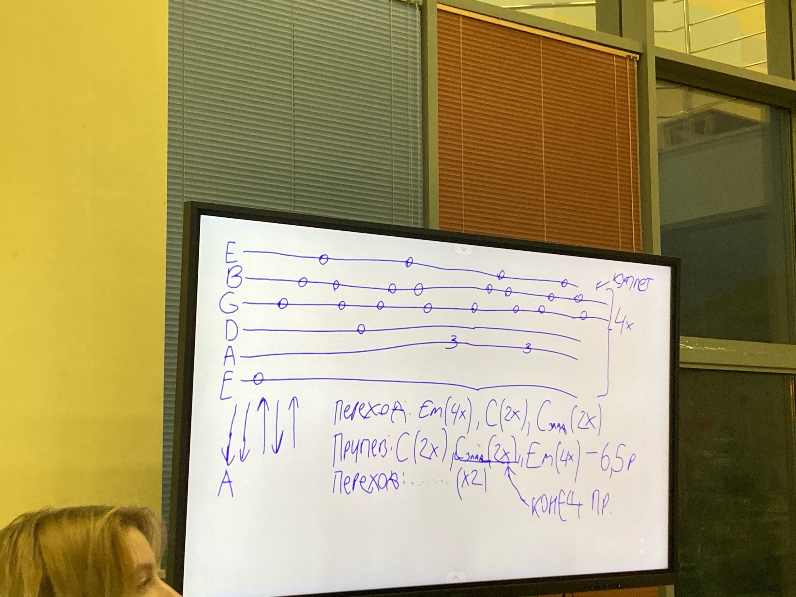

Орфей и Эвридика
Табы(из беседы):

Если вы, вдруг, не умеете читать табы, то просто перебор-шестёрка, то есть бас(*)-3-2-1-2-3. Играете все струны открытые, кроме 5 струна 3 лад.
(*) Бас меняете - сначала 6 струна, потом тот же перебор с 4 струны, потом два раза с 5 струны. Т.о. бас 6->4->5->5 (Я не умею объяснять)
После перебора в куплете есть небольшой проигрыш. В принципе на фото есть аккорды и бой. Аккорд C с подписью 3 лад это буквально C, но смещённый с первого лада на третий. В середине припева после слов "Каждый шаг..." нужно, не переходя на Em, снова играть C->C(3) и так далее. В конце припева("За тобой идёт... Она" на C(3) нужно продолжать до "она". Надеюсь, понятно объяснено